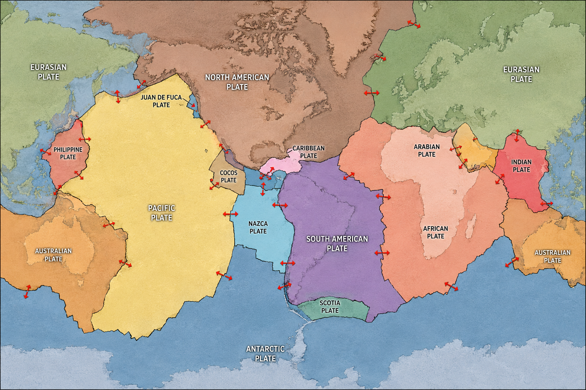
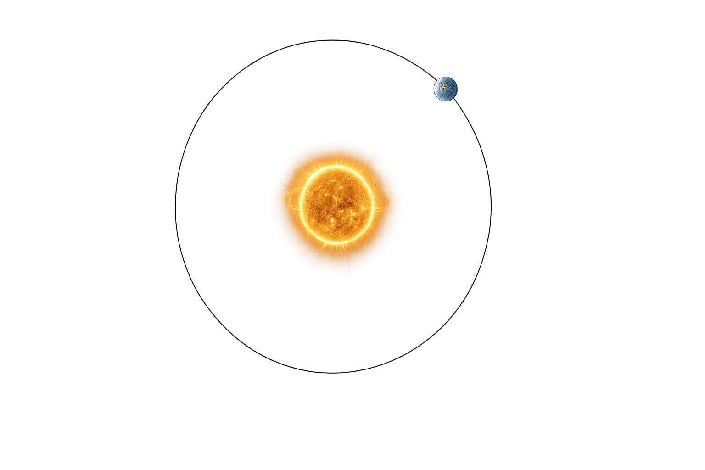
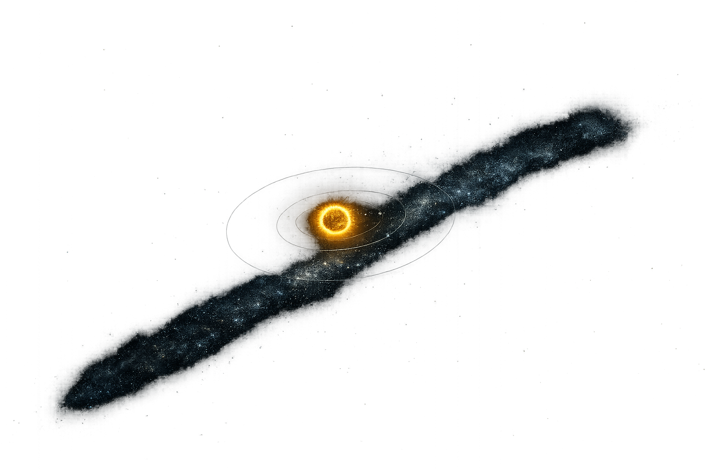
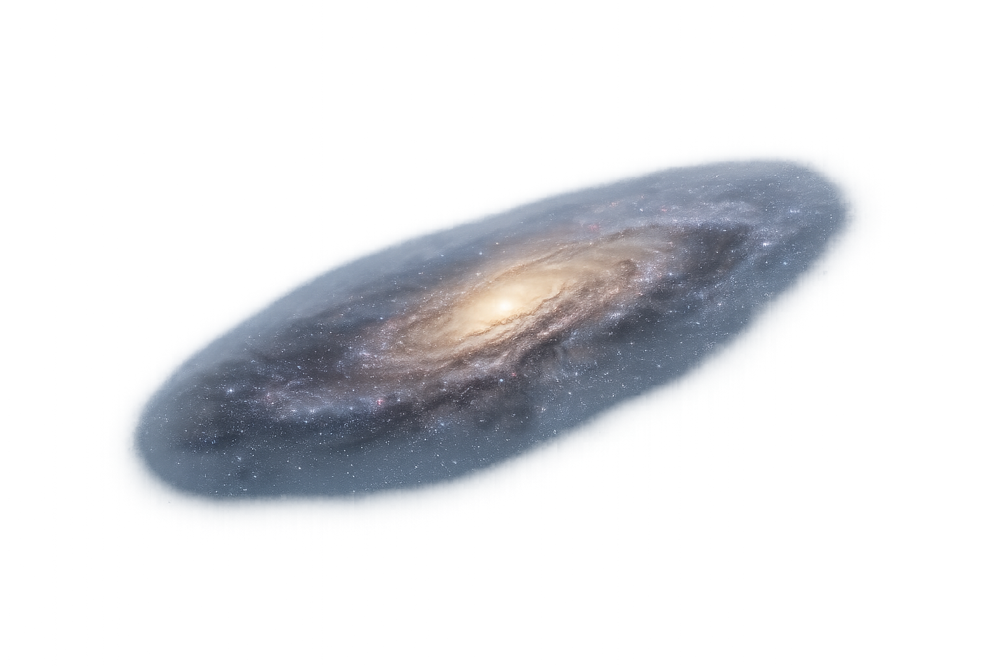
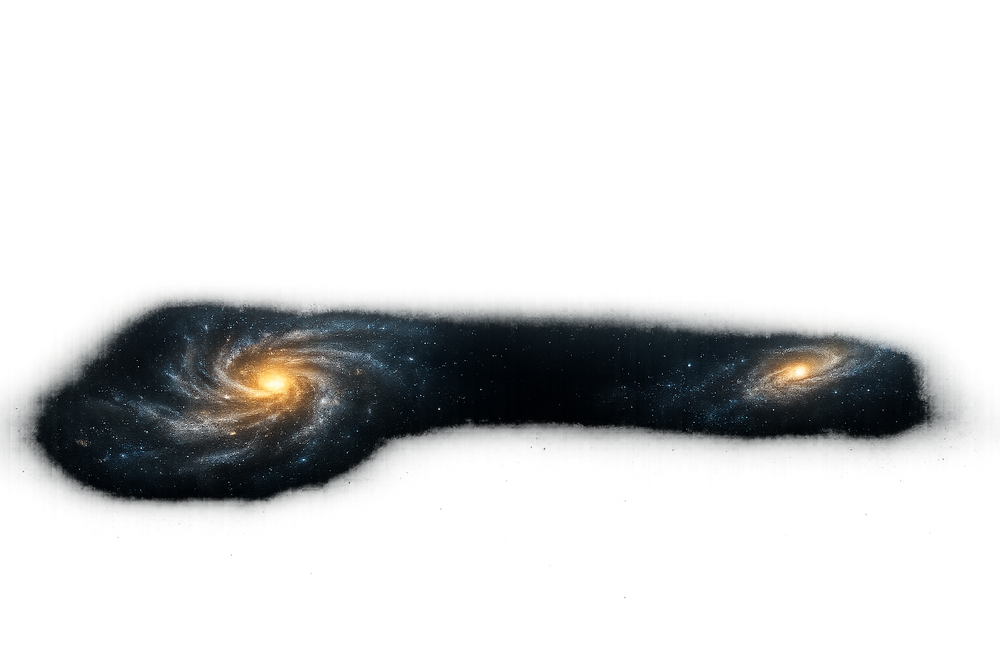
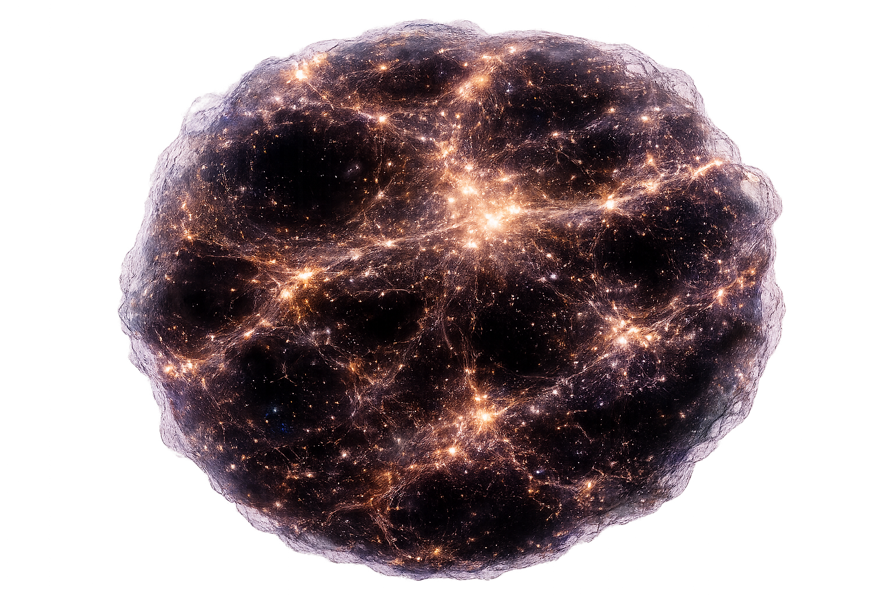
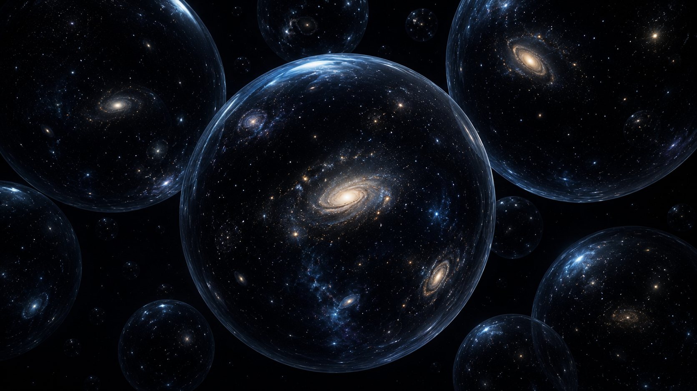
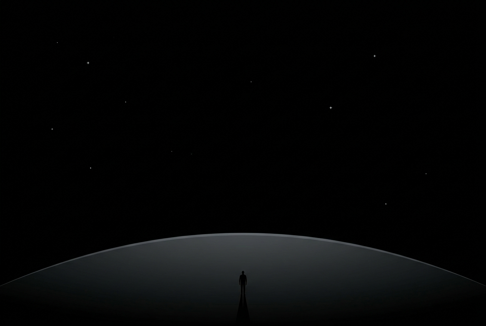

Tectonic Plates
The Earth's crust moves slowly over the mantle. Since you arrived, you have traveled:
Earth's Rotation
The Earth spins on its axis at the equator. Relative to the planet's center, you have traveled:

Earth Orbits The Sun
The Earth orbits the Sun at an average of 66,600 mph. Since you arrived:

The Sun's Motion
The Sun moves relative to nearby stars. Since you arrived, you have traveled:

Through the Milky Way
The Sun orbits the center of our galaxy. Since you arrived:

Toward Andromeda
The Milky Way is moving toward the Andromeda Galaxy. Since you arrived:

The Cosmic Web
The Milky Way moves through the cosmic web. Since you arrived:

The Multiverse?
If the Multiverse exists, its scale is beyond imagination. Numbers stop mattering. Since you arrived...

Speed Is Relative
It depends upon your perspective of the Universe. Since you arrived...